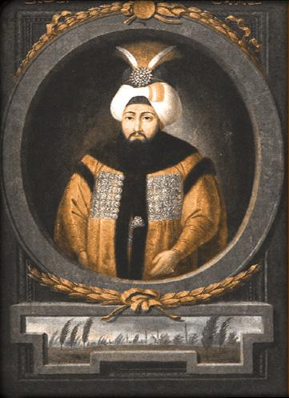

| önceki |  |
sonraki |
III. Osman (Osmanlı Türkçesi: عثمان ثالث; d. 2 Ocak 1699, Edirne – ö. 30 Ekim 1757, İstanbul), 25. Osmanlı padişahı ve 90. İslam halifesidir. Babası II. Mustafa, annesi Şehsuvar Valide Sultan'dır. Ömrünün tam 51 yılını Topkapı Sarayı Şimşirlik (Kafes) dairesinde tecrit altında geçirerek, Osmanlı hanedanında tahta çıkana kadar en uzun süre hapis hayatı yaşayan hükümdar olmuştur. Saltanatı dış savaşlardan uzak geçmekle birlikte, İstanbul'u vuran asrın en büyük yangınları, Haliç'in donduğu tarihi kış felaketi, asabi idari tasarrufları ve Türk Barok mimarisinin başyapıtı Nuruosmaniye Camii'nin açılışı ile tarihe damgasını vurmuştur.
Yarım Asırlık Tecrit ve Şehzadelik Yılları
III. Osman, 2 Ocak 1699 tarihinde Edirne Sarayı'nda dünyaya geldi. 1703 Edirne Vakası patlak verdiğinde henüz dört yaşındaydı; babası tahttan indirilince annesi ve ağabeyi Şehzade Mahmud ile birlikte İstanbul'a getirildi ve Topkapı Sarayı Şimşirlik dairesine kapatıldı. Çocukluğunu, gençliğini ve olgunluk çağını tamamen bu yüksek duvarlı dar mekânda, dış dünyadan bütünüyle izole bir şekilde geçirdi.
51 yıl süren bu insan takatini aşan yalnızlık döneminde kendisini marangozluk, fildişi oymacılığı, kuyumculuk ve hat sanatına verdi. Saray kütüphanesinden getirtilen tarih ve tıp kitaplarını tetkik etti. Ancak yarım asırlık tecrit, ruh dünyasında derin izler bıraktı; son derece kuşkucu, asabi, ani öfkelenen, merhametsizlikle itham edilecek derecede tavizsiz ve tez canlı bir mizaç edindi.
Tahta Çıkışı ve İdari Tasarrufları (1754)
Ağabeyi I. Mahmud'un 13 Aralık 1754 Cuma günü aniden vefat etmesi üzerine 55 yaşında tahta davet edildi. Eyüpsultan Camii'nde kılıç kuşanarak saltanat tahtına oturdu. İleri yaşta ve devlet tecrübesinden yoksun olarak tahta çıkması sebebiyle bürokrasiye ve vezirlere karşı aşırı güvensizlik besliyordu.
Bu güvensizlik yüzünden üç yıllık kısa saltanatı boyunca tam yedi sadrazam değiştirdi. Çorlulu Bahir Mustafa Paşa, Bıyıklı Ali Paşa, Yirmisekizzade Mehmed Said Paşa gibi devrin mühim ricalini vazifeden aldı; hatta Bıyıklı Ali Paşa'yı rüşvet ve suistimal suçlamalarıyla bizzat idam ettirdi. Yalan söyleyen, rüşvet alan veya vazifesinde ihmalkârlık gösteren devlet ricaline karşı son derece amansız cezalar tatbik etti.
Saray Yaşamı, Harem Nizamı ve Çivili Ayakkabılar
III. Osman'ın yarım asırlık kafes hayatı, saray adetlerinde de köklü değişikliklere yol açtı. Şehzadelik yıllarında yaşadığı içe kapanıklık dolayısıyla gürültüden, musikiden ve kadın sesinden nefret eder bir ruh haline bürünmüştü:
- Nalçalı (Çivili) Ayakkabılar: Padişah saray koridorlarında ve harem dairesinde dolaşırken cariyelerin ve harem kadınlarının önüne çıkmasını kesinlikle istemezdi. Bu sebeple pabuçlarının altına demir nalçalar ve iri başlı çiviler çaktırmıştı. Mermer taşlarda yankılanan tiz çivi seslerini duyan harem halkı, padişahın yaklaştığını anlayarak derhal odalarına çekilir ve ortalıktan kaybolurdu.
- Musikinin Yasaklanması: Saraydaki musikişinasları, rakkasları ve çalgıcıları Topkapı Sarayı'ndan uzaklaştırdı; sarayda saz çalınmasını ve şarkı söylenmesini men etti.
- Tebdil-i Kıyafet Teftişleri: Sık sık derviş, sipahi veya tüccar kılığına girerek İstanbul sokaklarını, hanları ve çarşıları bizzat teftiş etti. Fırınlardaki ekmek gramajlarını, kasaplardaki et fiyatlarını kontrol eder; hile yapan esnafa anında falaka ve sürgün cezası verirdi.
- Kıyafet ve Ahlak Fermanları: Gayrimüslim tebaanın ve kadınların giyim kuşamlarına katı sınırlamalar getirdi; gayrimüslimlerin Müslümanlar gibi giyinmesini yasakladı, kadınların açık saçık veya dikkat çekici elbiselerle sokaklarda dolaşmasını men eden fermanlar neşretti.
1755 Büyük Kış Felaketi: Donan Haliç
III. Osman devrinin en şaşırtıcı hadiselerinden biri, 1755 yılı Ocak ve Şubat aylarında İstanbul'u etkisi altına alan şiddetli kış mevsimidir. Sıcaklığın aşırı düşmesi neticesinde Haliç tamamen dondu. Buz tabakası öylesine kalınlaştı ki, Defterdar İskelesi ile Sütlüce arasında halk kayıklara ihtiyaç duymadan yürüyerek, kızaklarla ve arabalarla buz üstünden karşıdan karşıya geçti. Boğaz'ın girişine kadar sürüklenen dev buz kütleleri deniz ulaşımını günlerce felce uğrattı.
İstanbul'u Yıkan Büyük Afetler: Cibali ve Hocapaşa Yangınları
III. Osman saltanatı, payitaht İstanbul tarihinin en yıkıcı yangınlarına sahne oldu:
- 1755 Cibali Yangını: Cibali Kapısı dışındaki bir kahvehanede başlayıp rüzgârın tesiriyle kentin kalbine yayılan yangın, Unkapanı, Süleymaniye, Şehzadebaşı ve Aksaray semtlerini küle çevirdi. Binlerce ahşap ev, medrese ve han harabeye döndü.
- 1756 Hocapaşa Yangını: İstanbul tarihinin gördüğü en dehşetli yangınlardan biridir. İki gün iki gece devam eden alevler; Sadrazam Konağı'nı (Paşakapısı / Bâb-ı Âlî), Ayasofya civarını, Divanyolu'nu ve Mahmutpaşa'yı yok etti. Devlet arşivlerinin mühim bir kısmı yandı. Şehrin üçte ikisi enkaza döndü. III. Osman bizzat söndürme faaliyetlerine iştirak etmiş, afetzedelere hazineden yardım dağıtmıştır.
İmar Eserleri ve Nuruosmaniye Camii
Üç yıllık saltanatında meydana gelen felaketlere rağmen III. Osman mühim imar projelerini tamamlatmayı başarmıştır:
- Nuruosmaniye Külliyesi (1755): Ağabeyi I. Mahmud tarafından başlatılan bu muazzam eser, III. Osman devrinde tamamlanarak kendi adıyla (Nur-ı Osmanî) ibadete açıldı. Türk Barok mimarisinin zirve noktası kabul edilen cami; yarım daire şeklindeki revaklı avlusu, dalgalı kornişleri, barok mermer süslemeleri ve zengin kütüphanesiyle klasik Osmanlı mimarisinden ayrılan yepyeni bir devrin sembolü oldu.
- Ahırkapı Feneri (1755): Kumkapı açıklarında bir ticaret gemisinin karaya oturması üzerine, Boğaz girişinde deniz kazalarını önlemek maksadıyla Marmara surları üzerine İstanbul'un ilk fenni deniz fenerini inşa ettirdi.
- Bâb-ı Âlî'nin Yeniden İnşası: Yanan Sadrazam Sarayı'nın yerine, Osmanlı bürokrasisinin merkezi olacak müstakil Bâb-ı Âlî idari binalarını yaptırdı.
- Üsküdar İhsaniye Camii: Üsküdar'da kendi adını taşıyan İhsaniye semtinde cami, medrese ve çeşmeler tesis etti.
Dış Politika ve Barış Dönemi
Bu devirde Avrupa kıtası, büyük güçler arasındaki Yedi Yıl Savaşları (1756-1763) ile çalkalanmaktaydı. Prusya Kralı II. Friedrich, Osmanlı Devleti'ni Avusturya ve Rusya'ya karşı ittifaka çekmek için elçiler gönderdiyse de; III. Osman ve tecrübeli devlet adamları imparatorluğu bu büyük Avrupa savaşının dışında tutmayı başardılar. Sınırlarda sükûnet muhafaza edildi.
Vefatı
III. Osman, 30 Ekim 1757 gecesi yakalandığı ağır mide rahatsızlığı ve bacağında çıkan şirpençe (karbunkül çıbanı) sebebiyle 58 yaşında vefat etti. Saltanatı yalnızca 2 yıl 10 ay sürdü. Naaşı, kendi tamamladığı Nuruosmaniye Camii yerine, Yeni Cami Turhan Valide Türbesi'ne, babası II. Mustafa ve ağabeyi I. Mahmud'un yanına defnedildi.
Ailesi
- Eşleri:
- Leyla Başkadın (? - 1794)
- Zevkî Kadın (? - 1757)
- Ferhunde Kadın (? - 1791)
- Çocukları:
III. Osman'ın kısa süren saltanatında çocuğu dünyaya gelmemiştir. Vefatı üzerine amcası III. Ahmed'in oğlu Şehzade Mustafa (III. Mustafa) tahta çıkmıştır.
III. Osman hakkında daha fazla bilgi için buraya tıklayın.